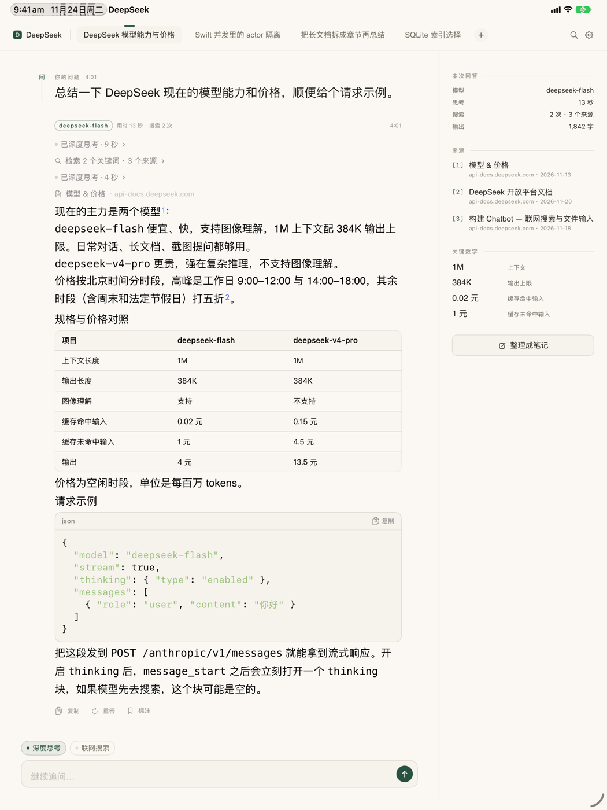
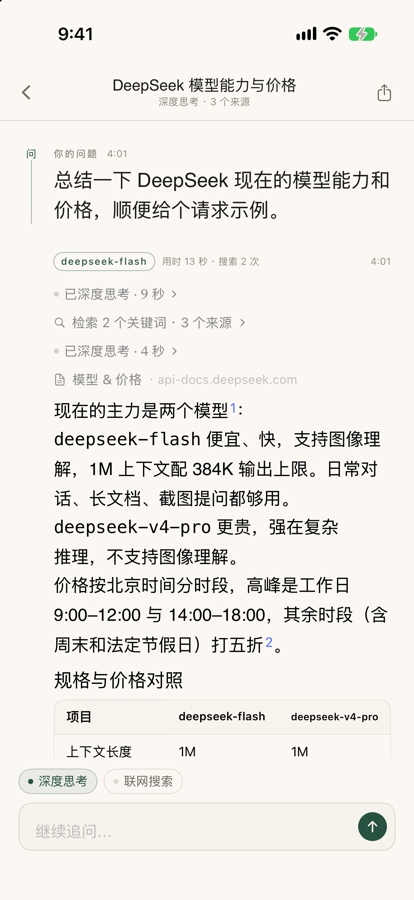
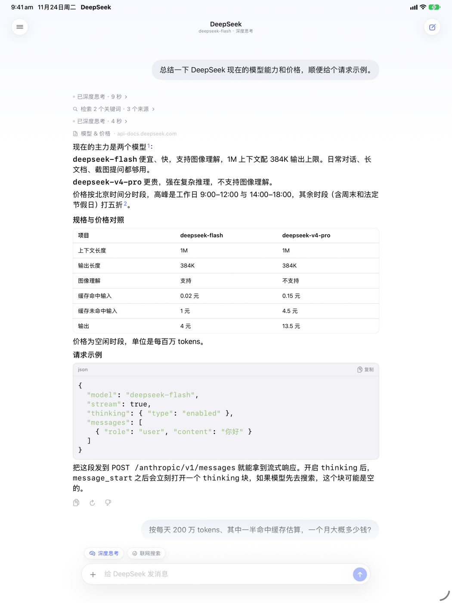
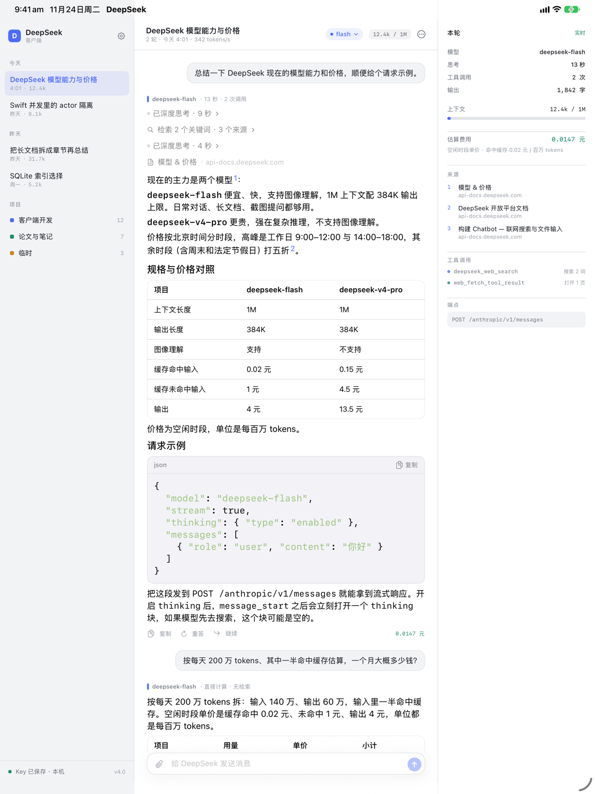
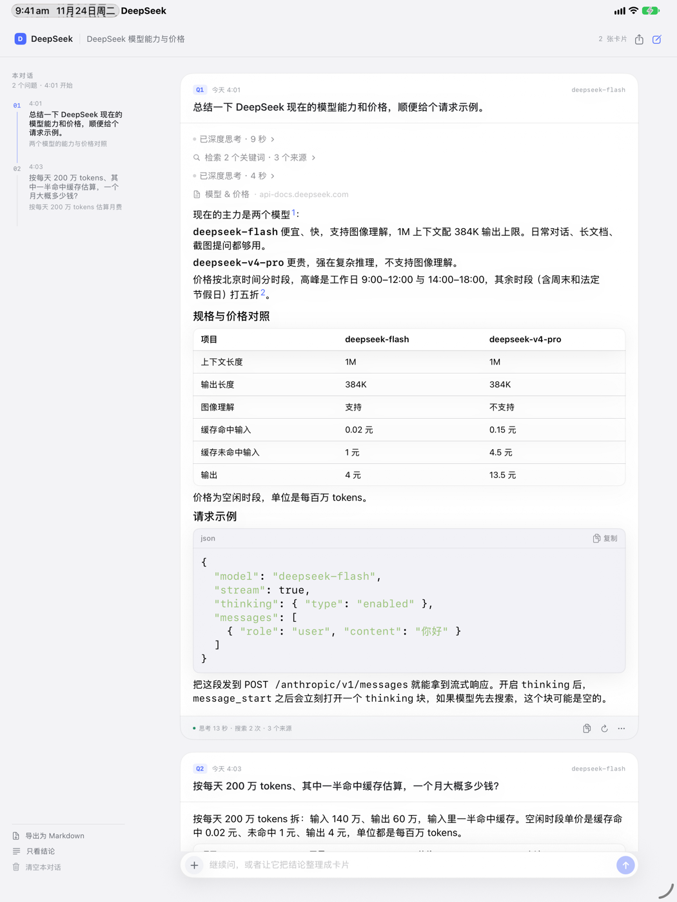

四套骨架都跑在模拟器里，用同一段回答拍下来：里面有深度思考、两次检索、一张价格表和一个代码块。 设备和字号一致，差别只在结构、信息密度和阅读节奏。挑一个，我把它接到已经写好的流式接口上。
研究阅读台
中文长答案用宋体排，右侧常驻一条边注：谁说的、花了多久、数字是几。


顶部会话标签条替掉侧栏，正文 620 居中，右侧 285 的边注常驻：模型、耗时、来源编号、关键数字，加一颗「整理成笔记」。
中文长文最舒服的一组字号与行距；引用角标和来源编号不用离开正文；标签条让切会话只要一次点击。
边注在 iPhone 上没有位置，来源只能挪到回答末尾；宋体不适合代码和表格，要和无衬线混排；会话管理只能收进标签条的溢出菜单。
极简对话
没有侧栏，没有分隔线。历史是浮层，输入框是一块浮起来的白色圆角。

正文 660 居中，全屏只有一张纸。左上角一颗按钮拉出半屏历史浮层，底部输入条悬浮在白底上，深度思考与联网搜索是两颗胶囊。
注意力只在答案上；iPad 和 iPhone 观感几乎一致；代码量最少，之后加功能最快。
iPad 两边各空出 180pt，大屏没被用起来；切会话要两步；没有成本、上下文、来源这类信息位，想加得另找地方。
工作台
左栏会话与项目，中栏对话，右栏这一轮花了多少、来源在哪、上下文还剩多少。

三栏 232 / 528 / 272。左栏按今天、昨天、项目分组；右栏是这一轮的真实数字：13 秒思考、2 次工具调用、12.4k 上下文、0.0147 元、三个来源。
iPad 的信息利用率最高；费用、上下文占用、工具调用都在当场；左栏的项目分组适合长期积累。
正文只有 528pt，宽表格和长代码会挤；iPhone 上右栏压成三个指标 chips，一半信息被砍；实现量最大。
对话卡片流
一轮问答一张卡。卡片头是问题，脚是检索状态和操作，左边一条问题轴负责跳转。

灰底上浮着 700 宽的卡片，圆角 20，头尾各一条细线。左侧 208 是问题轴，当前这一轮标成蓝色，底部是导出与「只看结论」。
每一轮有固定的头、脚和操作位置，回看不用找；跳转靠左轴；卡片本身适合截图或转成笔记分享。
长答案一屏还是装不下，卡片会被内容撑得很长；两轮以上，iPhone 顶部的问题胶囊会挤成横滑；边框把连续阅读切成一段一段。
五个维度的直观点数。最后一行的「实现量」点越多越省事。
| 维度 | 01 墨纸 | 02 浮岛 | 03 台面 | 04 卡片 |
|---|---|---|---|---|
| iPad 大屏利用 | ●●●●● | ●●●●● | ●●●●● | ●●●●● |
| 中文长文阅读 | ●●●●● | ●●●●● | ●●●●● | ●●●●● |
| 成本与上下文可见 | ●●●●● | ●●●●● | ●●●●● | ●●●●● |
| 会话切换效率 | ●●●●● | ●●●●● | ●●●●● | ●●●●● |
| 实现量（点越多越省事） | ●●●●● | ●●●●● | ●●●●● | ●●●●● |
点数是相对判断，不是评分：同一行里比较才有意义。
这台客户端是你自己在用，iPad 是主力设备，一天里真正会重复的动作是切会话、看它调了几次搜索、这条回答花了多少。台面把这些放在不需要跳转的位置，528pt 的正文也被截图验证过：三列表格、代码块、中文正文都不挤。
代价是 iPhone 版本会损失右栏一半的信息。这部分本来就属于「在 iPad 上查看」的内容，收成三个指标 chips 不算勉强。